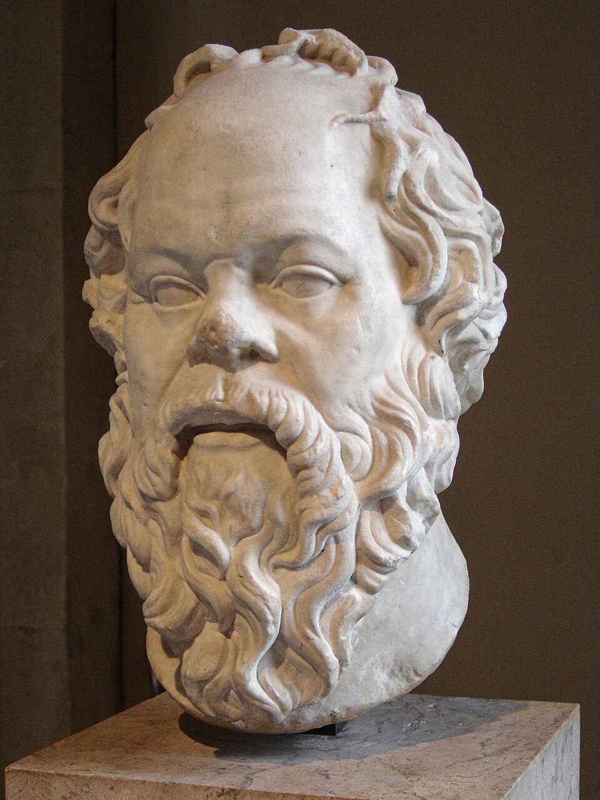
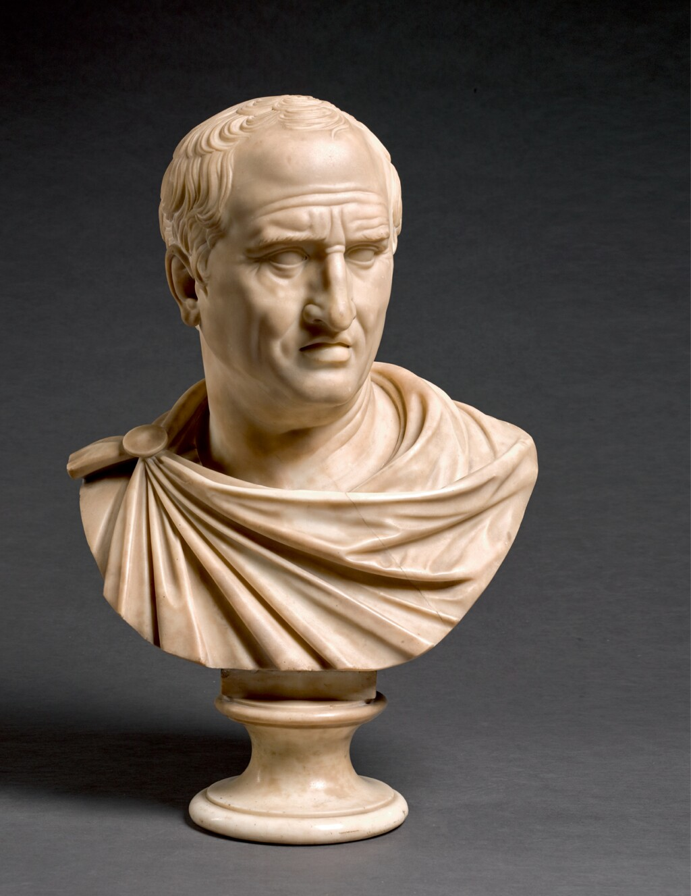
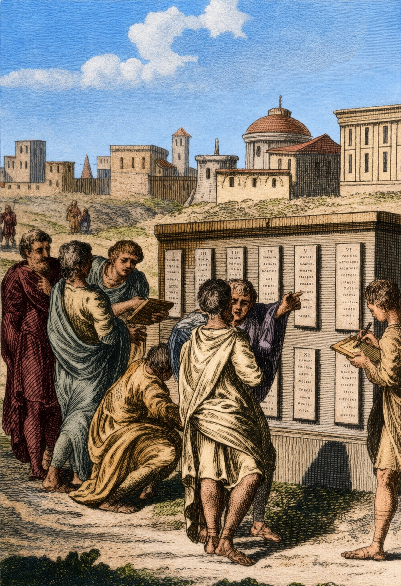
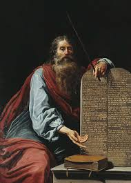
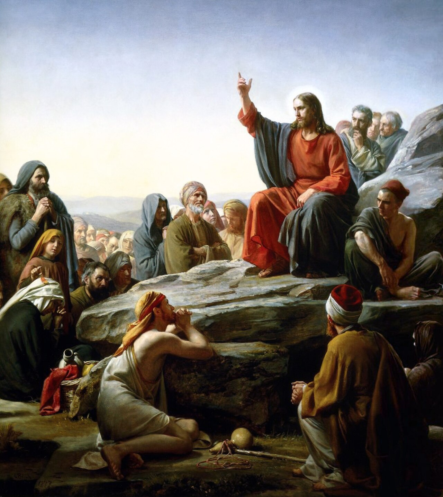
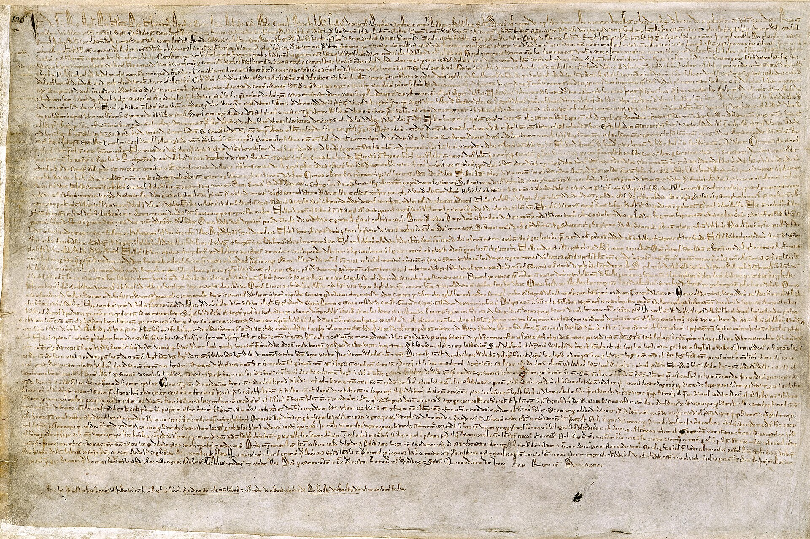
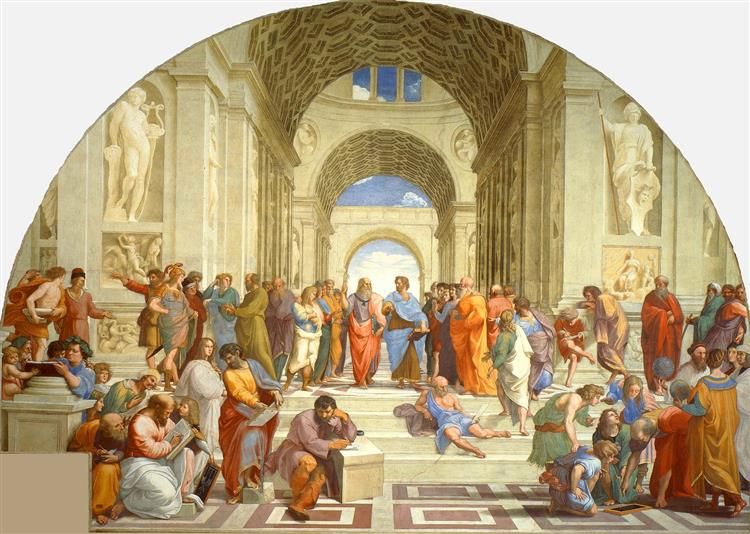
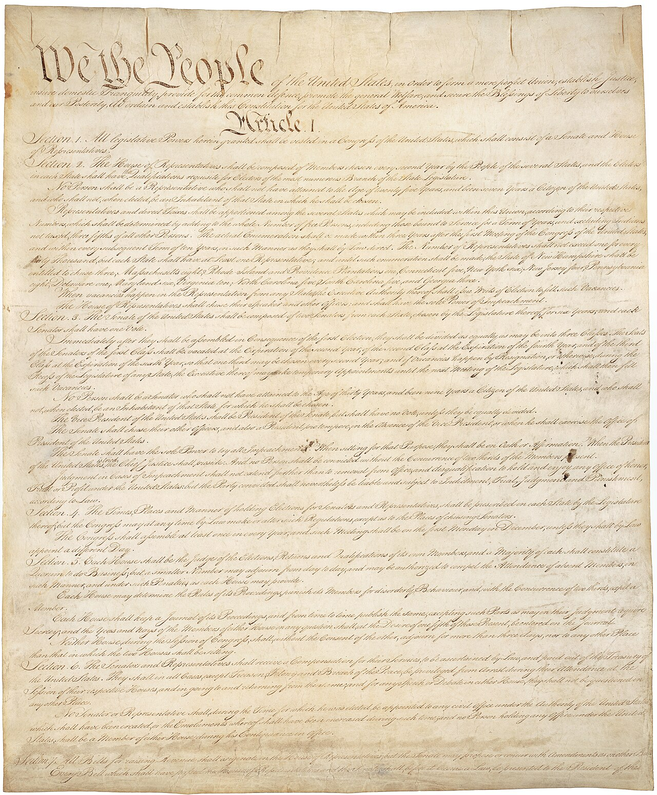
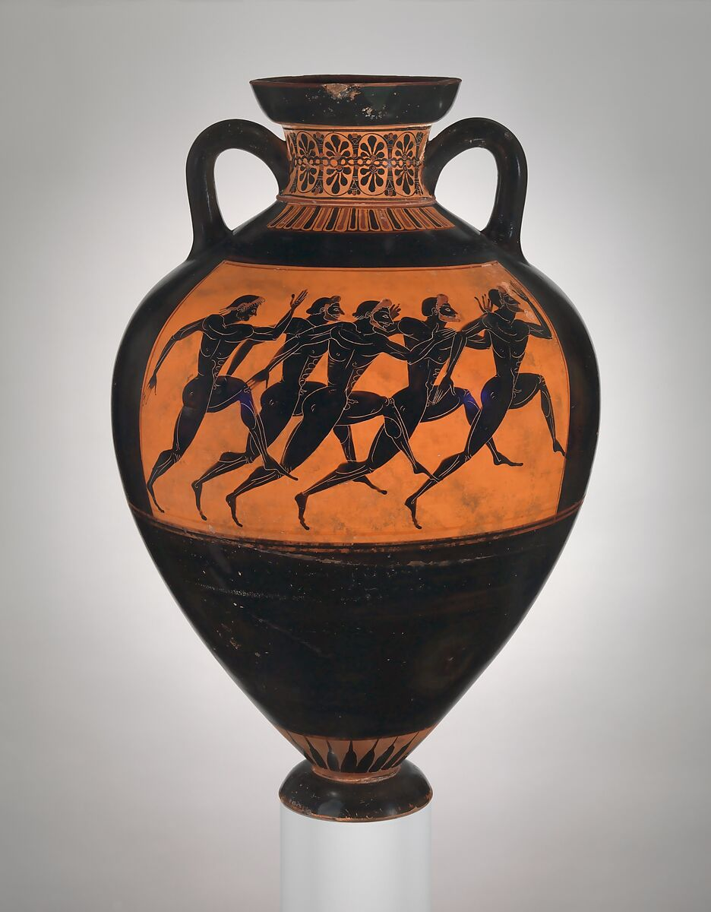

WORLD HISTORY — SEMESTER 1, LESSON 01
In 399 BCE, a 70-year-old man stood in front of a jury of 500 citizens in Athens, Greece. His name was Socrates. He had spent his life asking hard questions: What is justice? Who should rule? What makes a law fair? The jury found him guilty of questioning the government and sentenced him to death.
In 399 BCE, Socrates stood in front of 500 citizens in Athens. He was 70 years old. He had spent his life asking hard questions about justice, leaders, and fair laws. The jury said he was guilty and sentenced him to death.
The rules that govern your school, your city, and your country did not appear from nowhere. They grew from ideas first argued in ancient Greece and Rome, and from religious traditions written thousands of years ago. This lesson follows those ideas as they move from ancient streets and temples into modern government.
The rules in your school, city, and country did not come from nowhere. Many started in ancient Greece and Rome. Others came from old religious traditions. This lesson shows how those ideas still shape government today.

Around 500 BCE, Athens began an experiment that no civilization had tried on this scale before. The experiment was democracyA system where citizens vote and make decisions about how their community is governed.. Not everyone could vote; women, enslaved people, and foreigners were left out. Still, free male citizens could speak, vote, and help decide laws.
Around 500 BCE, Athens tried a new kind of government. It was called democracy. Not everyone could vote. Women, enslaved people, and foreigners were left out. But free male citizens could speak, vote, and help make laws.
Socrates believed people should question everything, including their leaders. His student Plato wrote down his ideas after Socrates was executed. Plato worried that crowds could make bad choices if they acted on anger instead of wisdom.
Socrates believed people should ask questions about everything. That included leaders and laws. His student Plato wrote down his ideas. Plato worried that crowds could make bad choices when they were angry or uninformed.

Aristotle, Plato's student, studied more than 150 governments across the ancient world. He believed the best government mixed parts of different systems. He also argued that rulers must follow the law just like everyone else. That idea became one root of the rule of lawThe principle that everyone, including rulers and governments, must follow the same laws..
Aristotle studied more than 150 governments. He thought the best government mixed different ideas together. He also said rulers must follow the law like everyone else. This helped create the idea called the rule of law.
These ideas did not stay in Athens. They spread across the Mediterranean world through trade, war, and education. Today, when citizens question leaders at public meetings, they are using one of the oldest tools in democratic life.
These ideas did not stay in Athens. Trade, war, and schools spread them to other places. Today, when people question leaders in public meetings, they are using an old democratic idea.
Socrates never wrote a book. Almost everything we know about his ideas comes from other people writing down what they said he said.
"It is not possible to rule well without having been ruled."
Aristotle, Politics, approximately 350 BCE
Aristotle believed leaders understand power better when they have also lived under rules made by others.
Aristotle thought leaders should know what it feels like to follow rules before they make rules for others.
1. What do you think Aristotle means?
2. How does this idea connect to what makes a government fair?

About 500 BCE, Rome threw out its last king. Romans were tired of being ruled by one person who could do whatever he wanted. They built a republicA system of government where citizens elect representatives to make laws for them., where elected leaders shared power and served for limited time.
About 500 BCE, Rome removed its last king. Romans did not want one person to have all the power. They built a republic. In a republic, citizens choose leaders to make laws.

The Romans also created a written legal code called the Twelve Tables. Before this, powerful people could twist unwritten laws. The Twelve Tables were posted in public so citizens could see the rules. Written law made it harder for leaders to secretly change the rules to help themselves.
Rome wrote down its laws in the Twelve Tables. Before that, powerful people could change the meaning of laws. Written laws helped citizens see the rules. This made it harder for leaders to cheat.
Cicero argued that a law higher than government exists. He called this idea natural rightsBasic rights every human being has simply because they are human.. If a government violates basic human rights, Cicero said that law is not truly just.
Cicero said people have basic rights because they are human. These are called natural rights. He believed an unfair law is not truly just.

When later governments copied Rome, they copied both its strengths and its warnings. The United States created a Senate, divided power among branches, and wrote rules in public documents. Rome showed that laws can limit power; Rome also showed that a republic can collapse when powerful people stop respecting those limits.
Later governments copied Rome. The United States created a Senate and divided power into branches. It also wrote its rules in public documents. Rome showed that laws can limit power, but it also showed that a republic can fall apart.
You are building a republic. You can keep only two protections. Which two survive?


While Greek and Roman thinkers focused on reason, a different tradition developed in the Middle East. Jewish scripture taught that all human beings are created in the image of God. In the ancient world, this was a powerful claim. It said every person has dignity, not only kings and priests.
Greek and Roman thinkers focused on reason. A different tradition grew in the Middle East. Jewish scripture said all people are created in the image of God. This meant every person has dignity, not just rulers.
The Ten Commandments were also a form of law. They applied to everyone: kings and common people alike. This connected with Greek and Roman ideas in a new way. Power should be limited because human beings have worth.
The Ten Commandments were a kind of law. They applied to everyone, including kings. This connected to Greek and Roman ideas. Leaders should have limits because people matter.
Christianity built on this idea by teaching that every person has equal worth in the eyes of God. That idea challenged the Roman world, where status, wealth, citizenship, and slavery divided people sharply. Later Christian thinkers argued that unjust rulers could be resisted because rulers also answer to a higher moral law.
Christianity taught that every person has equal worth to God. This challenged the Roman world, where people were divided by wealth, status, citizenship, and slavery. Later Christian thinkers said unfair rulers could be resisted.

In 1215, English nobles forced King John to sign the Magna Carta. It said even the king had to follow the law. Centuries later, American colonists used similar arguments against King George III. The idea moved across time: rulers do not create all rights, and rulers cannot simply erase them.
In 1215, English nobles forced King John to sign the Magna Carta. It said even the king had to follow the law. Later, American colonists used a similar idea against King George III. Rights do not come only from rulers, so rulers cannot simply take them away.

If you had to sit on these steps for one hour, which person in this picture would you avoid talking to?
"No free man shall be seized, imprisoned, dispossessed, outlawed, exiled or ruined in any way, nor in any way proceeded against, except by the lawful judgement of his peers and the law of the land."
Magna Carta, Clause 39, 1215 CE
This sentence helped create the idea that government must follow legal steps before it can take away a person's freedom.
This sentence helped create the idea that the government must follow the law before taking away someone's freedom.
1. What rights does this document say a king cannot take away?
2. How does the Magna Carta connect to modern democracy?

All the ideas from this lesson point toward one central question. Will the government follow the rule of law, or will it fall into tyrannyA system where one ruler or a small group holds power without legal limits.? The difference matters because laws can protect people, but laws can also be ignored by people with power.
All the ideas in this lesson lead to one question. Will the government follow the rule of law, or will it become tyranny? This matters because laws can protect people, but powerful people can also ignore laws.
Under the rule of law, the law applies to everyone. A president, judge, police officer, or ordinary citizen can be held responsible for breaking it. Courts exist to interpret laws, and citizens can challenge laws they believe are unjust.
Under the rule of law, the law applies to everyone. Leaders, judges, police officers, and citizens must follow it. Courts help explain laws. Citizens can challenge laws they think are unfair.

Under tyranny, one person or one group decides when rules matter. The ruler can change the law whenever it gets in the way. People can be punished for disagreeing, and courts can be pressured to obey the ruler instead of the law.
Under tyranny, one person or group controls the rules. The ruler can change the law when it is inconvenient. People can be punished for disagreeing. Courts may serve the ruler instead of justice.
The United States government was designed to prevent tyranny. The founders read Greek philosophy, Roman history, English law, and religious arguments about human dignity. They built a system with written laws, divided power, courts, elections, and rights that the government is not supposed to violate.
The United States government was built to stop tyranny. The founders studied Greek ideas, Roman history, English law, and religious ideas about human dignity. They created written laws, divided power, courts, elections, and protected rights.
The Parthenon in Athens, symbol of a city that argued publicly about power.
The U.S. Supreme Court, where arguments about law and rights still get decided.
Which building looks more powerful, and which one would feel more intimidating to walk into?
If a government passes a law you believe is deeply unjust, what tool from this lesson would you reach for first?
ROMAN LAW REACHED SAN DIEGO BAY THROUGH SPAIN.
When Spanish colonizers arrived in what is now San Diego in 1769, they brought legal traditions rooted partly in Roman law. Later, California law blended Spanish legal ideas with Anglo-American ideas rooted in the Magna Carta.
That means the legal story in this lesson is not only ancient; parts of it shaped courts, land, and citizenship in California.